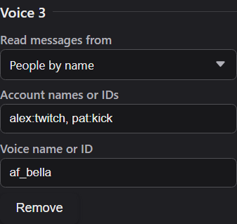

Read VIPs or members
- Open the extension popup or the settings panel in the desktop app. Under Main Chat, open Message - Text to Speech.
- Turn on Text-to-speech incoming messages. Scroll to Read specific messages only.
- Turn on Match any selected role, Only members can have messages read and Only VIP marked users can have messages read.
- Copy the updated Main Chat link. Open it, or paste it over the old URL in your OBS dock or browser source.

For VIPs alone, select only VIP. For members alone, select only Member. With multiple roles selected, Match any reads someone who qualifies for any one of them, once. With it off, the sender needs every selected role.
The same choice applies to moderators, hosts, bots, privileged users and confirmed followers. Other restrictions, such as donations only, allowed sources, or the default exclusions for bots and hosts, still apply.
Using a chat command or an existing dock URL?
For on-demand speech, turn off automatic reading and enable the TTS chat command (usually !say). Only members can use the TTS command adds a separate membership requirement. Leave that command restriction off to let a VIP qualify through your selected roles.
If you edit links by hand, &speech&viptts&membertts&anyroletts reads VIPs or members. Add &followertts to include confirmed followers. With no roles selected, Match any alone leaves the audience unrestricted.
Approve a VIP
Right-click one of their messages in Main Chat and choose User Actions > VIP User. Their next message qualifies for VIP speech. This gives them a local Social Stream VIP role.
To add someone ahead of time or remove them later, search settings for Identify by name who are VIPs. Separate entries with commas. Use alex:twitch,pat:kick to choose specific accounts. An entry without a platform applies across sources.
The source supplies membership automatically. Use VIP to approve someone yourself.

Include free followers
Select Only confirmed followers in the same dock settings. To read followers, VIPs and members, select all three and turn on Match any selected role. Copy the updated link again.
| Source | Who qualifies |
|---|---|
| Twitch | Subscribers qualify as members when Twitch marks the message. For free followers, connect in WebSocket mode as the broadcaster or a moderator with follower-read access. Search SSN settings for Check Twitch chatters for follower status and turn it on. SSN reuses each answer for about a minute. |
| TikTok | Subscribers can qualify as members. In the desktop app, follower matching also works when the connection supplies follower status on the chat message. Standard browser capture can see follow alerts, but ordinary chat usually has no follower status. |
| Kick | Subscribers can qualify as members when identified. A follow alert doesn't establish the sender's status on later chat. Use VIP to approve a free follower. |
| YouTube | Channel members can qualify. An ordinary free subscription can be private. Use VIP to approve a viewer, or turn on subscribers-only chat in YouTube Studio if you want to restrict who can type, too. |
If follower status is unavailable, the viewer can still qualify through another selected role with Match any on. An older dock link with &tiktokfollowertts applies a separate TikTok-only restriction. Remove that parameter if you want a TikTok VIP or member to qualify independently. For regular chat from paid Twitch or YouTube members, leave the source settings that limit membership to subscription notices or monthly highlights off.
Give people or groups different voices
Use the Flow Actions overlay to handle speech. Turn off automatic TTS in any Main Chat dock or other overlay reading the same messages so you hear each one once.
- Open Event Flow Editor. Under Start with a template, choose Chat voices by person or role. It starts inactive.
- Click the Speak Text node. It starts with VIPs and Members. Under each group, enter a voice name or ID from your Flow Actions speech provider. Leave it blank to use the provider's default voice.
- Choose Add person or group to add a follower group or a person. Choose Remove to drop a rule. Only listed people and groups have ordinary chat read.

Give people their preferred voice
To read only VIPs, members or confirmed followers, turn on Require a listed role and add each role you accept. A viewer needs any one of them. With the checkbox off, listing someone by name also lets them be read.
Add a People by name row for each voice. Enter the voice and list the accounts that want it, separated by commas, such as alex:twitch, pat:kick. You can also enter captured user IDs. A matching person gets their assigned voice. Other eligible viewers use the first matching role's voice.
For Edge Natural, select Edge Natural under Flow Actions > Text-to-Speech Settings in the desktop app and keep the app open and online. Enter an Edge voice ID for each list, such as en-US-EmmaMultilingualNeural.


Play the voices on stream
- Turn on Active and click Save Flow.
- In the popup, find Flow Actions. Under Text-to-Speech Settings, pick the provider that matches your voice names. Copy the Flow Actions link and keep it open in your browser or OBS Browser Source.
- Have an approved viewer send a chat message. If you're using OBS, watch the source in the audio mixer. If their message plays twice, check for a second open reader or another active speech flow.
Dock checkboxes control the dock. Edit the template's people and groups to change who the Flow Actions overlay reads. For help picking a provider or routing OBS audio, see the TTS setup guide.